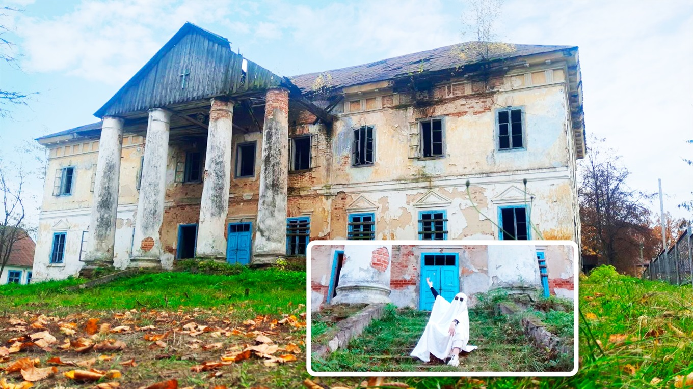
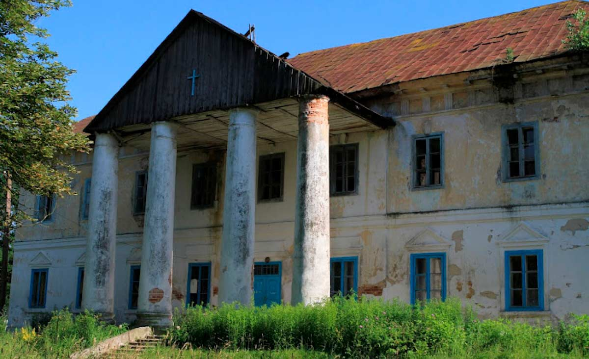
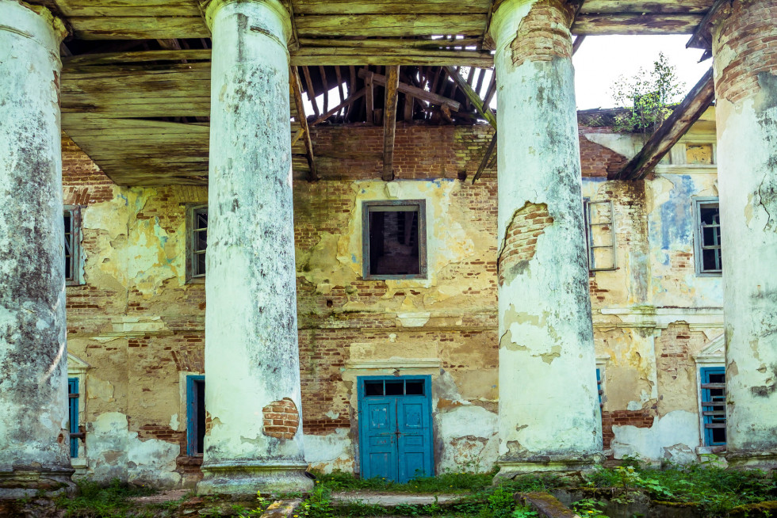
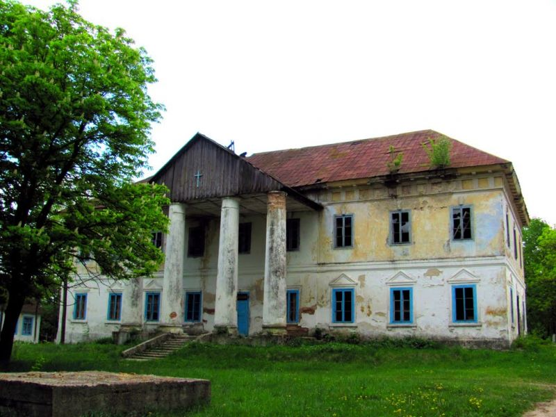

Фото-галерея




Побудований в 18 столітті величний двоповерховий будинок з колонадою біля парадного входу колись належав родині графа Ф. Красицького, спадкоємця роду герба Рогаля. Будівля мала багате зовнішнє оздоблення фасаду, виконане в стилі ампір. Під час правління польської влади на землях містечка Володимирець розташовувалося управління справами сільськогосподарської галузі, місцевого та Городецького спиртзаводів. Побудований в 18 столітті величний двоповерховий будинок з колонадою біля парадного входу колись належав родині графа Ф. Красицького, спадкоємця роду герба Рогаля. Будівля мала багате зовнішнє оздоблення фасаду, виконане в стилі ампір. Під час правління польської влади на землях містечка Володимирець розташовувалося управління справами сільськогосподарської галузі, місцевого та Городецького спиртзаводів. Сьогодні будівля знаходиться в занепаді і повільно руйнується, капітальний ремонт у стінах палацу не проводився понад півстоліття, тому історичний пам`ятник архітектури потребує відновлення. До Великої Вітчизняної війни в будівлі розташовувалися різні адміністративні установи, які були закриті ще до початку бойових дій. Будівля вціліло під час пожеж війни і після неї в ньому розташовувався дитячий будинок. На початку 60-х років палац був відданий під управління місцевого колгоспу. Сьогодні будівля знаходиться в занепаді і повільно руйнується, капітальний ремонт в стінах палацу не проводився понад півстоліття, тому історична пам'ятка архітектури потребує відновлення.